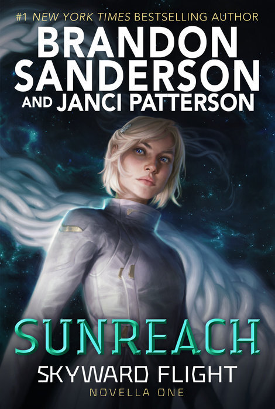

"Sunreach"
- Read on 2024-04-26
- Rating: ️️️️️
- Format: 🎧 (5 hours 21 minutes)
Paced and written as a novella, this book is great in that very format. It's not vital to read these to enjoy the main storyline of the series, but great for adding context to some of the characters from the main series (and maybe fill in some colorful details). I'm glad I revisited the second book right before this, since this book starts before that book even finishes. I would strongly discourage anybody reading (or listening to) this book without having done so as well to the prior books.
- Prior: Starsight
- Next: The Good Neighbor